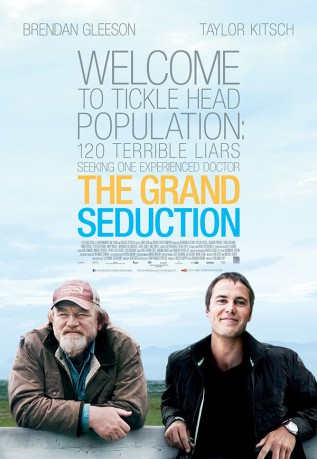
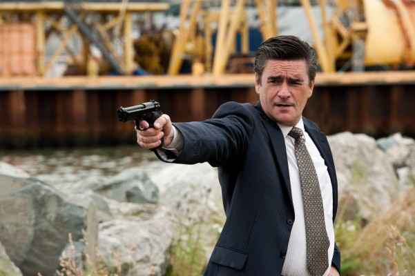

#7263 Die Große Versuchung - Lügen, bis der Arzt kommt
 gesehen am 07.03.2018
gesehen am 07.03.2018
 
 IMDB-Wertung: 7.0 / 10
IMDB-Wertung: 7.0 / 10  Metascore: 0
Metascore: 0 
The small harbor of Tickle Cove is in dire need of a doctor so that the town can land a contract to secure a factory which will save the town from financial ruin. Village resident Murray French (Gleeson) leads the search, and when he finds Dr. Paul Lewis (Kitsch) he employs - along with the whole town - tactics to seduce the doctor to stay permanently.
Jahr: 2013
Dauer: 113 Minuten
FSK: 6
Land: Kanada Studio: UFATonspuren: DTS - ,
Untertitel: Deutsch,
Auflösung: 1080p (1920x1040) Größe: 6707 MB
Genre: Komödie
Regisseur: Don McKellar
Drehbuch: Ken Scott
Soundtrack:
Darsteller:
- Percy Hynes White als Young Murray
 Brendan Gleeson als Murray French
Brendan Gleeson als Murray French Liane Balaban als Kathleen
Liane Balaban als Kathleen- Mark Critch als Henry Tilley
 Gordon Pinsent als Simon
Gordon Pinsent als Simon- Lawrence Barry als Mayor Tom Fitzpatrick
 Taylor Kitsch als Dr. Paul Lewis
Taylor Kitsch als Dr. Paul Lewis- Mary Walsh als Vera
- Steve O'Connell als Joe
- Anna Hopkins als Helen
-  Peter Keleghan als Trip Anderson
- Michael Therriault als Trip's Assistant
- Sean Panting als Ernest French
- Crystal Dawn Parsons als Alice French
- Cathy Jones als Barbara French
- Megan Jones als Sheryl Fitzpatrick
- Kelsi Prince als Lizzie Fitzpatrick
- Janelle Hickey als Stewardess #1
- Natalia Henelly als Stewardess #2
- John Sheehan als Custom Officer
- Terry Butler als Herbert
- Pete Soucy als Bob Mahoney
- Matt Watts als Frank Dalton
- Margaret Killingbeck als Ellie
- Michelle Rex als Ann Tilly
- Carly Boone als Lucy Tilley
- Kevin Lewis als Captain Parise
- Teigan Follett als Young Daniel
- Sheila Redmond als Waitress at Joe's
- Lindsay Johnson als Clavert Reid
- Annette May Miller als Elderly Woman
- Rhonda Rodgers als Samantha
- Dave Sullivan als Christian
- Jim Spence als Fiddler
- Sara Tilley als Miriam Mahoney
- Jacob White als David Mahoney
- Geoff Adams als Trip's Assistant #2
- Roger Maunder als Factory Friend
- Frank Holden als Marcel
- Janet Edmonds als Mrs. Carter
- Simon Peacock als Cricket Commentator
- John Bartlett als Himself - Hockey Commentator
- Lisa Machin als
- Morgan T. Lee als New Factory Worker , uncredited
- Jim Payne als Accordion Player , uncredited
Datei: X:\2013(G-H)\Große Versuchung - Lügen, bis der Arzt kommt, Die (2013, FSK6, 1920x1040).mkv seit 11.10.2017
Festplatte: HD 2012(N-Z)-2013(A-H)
 Es gibt insgesamt 43 Filme in der Gruppe '2013(G-H)'
Es gibt insgesamt 43 Filme in der Gruppe '2013(G-H)'